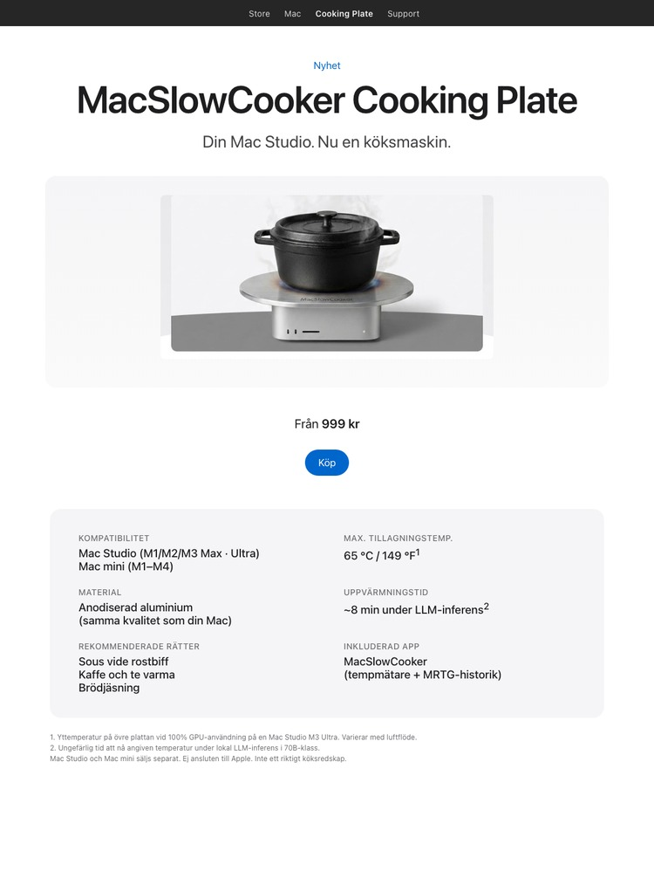

MacSlowCooker Cooking Plate
Din Mac Studio. Nu en köksmaskin.

Cluster Edition

Cluster Edition — för LLM-träningsracket. Fyra Mac minis, en platta. Samma parodi, fyra gånger så mycket BTU.
Var skämtet kommer ifrån
Under utvecklingen av MacSlowCooker — en riktig macOS-app som visualiserar GPU-användning i Dock som en kokgryta — värmde lokal LLM-inferens på en Mac Studio M3 Ultra upp chassit så pass att skämtet "skulle du faktiskt kunna laga mat på det här?" kom upp gång på gång.
Så den här konceptsidan finns. Den ramar in värmeutvecklingen från en hårt arbetande Mac som om det vore en köksfunktion. Siffrorna är verkliga, produkten är inte.
De verkliga siffrorna
- Mac Studio M3 Ultra når ungefär 65 °C / 149 °F på övre plattan vid 100 % GPU-användning under längre tid.
- Tid att nå den temperaturen under lokal LLM-inferens i 70B-klass: ~8 min.
- Apples termiska design håller övre plattan långt under normala matlagningstemperaturer. Sous vide-intervall, inte wok.
- Du kan övervaka allt detta i realtid med den riktiga MacSlowCooker-appen (Dock-ikon, popup-fönster, MRTG-style 4-panels historikvisning).
Gör det inte på riktigt
Att ställa varma kärl, vätskor eller något värmekänsligt på en aktiv dator är en dålig idé. Mac Studios övre platta är aluminium men luftflödet är kritiskt för att hålla SoC under termiska gränser. Blockera det och du förkortar maskinens livslängd och kan ogiltigförklara garantin.